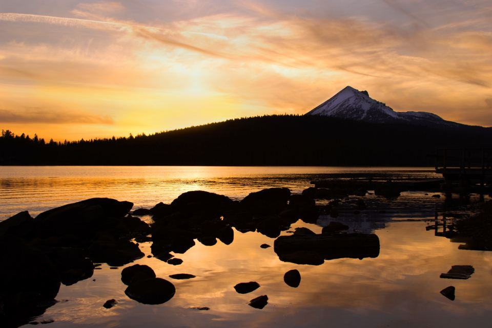

Referenser
Ett urval av uppdrag vi har utfört.
- 2025

Russet Kalle, 36 år
Verkning var femte vecka med pauser, och mjuka hovskor på grusvägen till vinterhagen.
- 2026

Kallinge Pensionsgård
Tjugoåtta pensionerade hästar med fast besöksdag och bilder till ägarna efter varje gång.
- 2025

Valacken med PPID
Tidiga tecken upptäckta vid verkning, blodprov hos veterinären och medicin innan fånget kom.
- 2025

Artrosstoet Tindra
Verkning med lågt hovstöd och limskor fram efter veterinärens bedömning av knäleden.
- 2024

Olofströms Ridklubb
Fyra av klubbens tidigare lektionshästar med fasta besök i pensionshagen.
- 2024

Gårdsstall i Hasslö
Två äldre hästar med tunn sula provade ut hovskor för promenader på skärgårdsvägarna.
Ägare till äldre hästar
”Kalle är 36 och har aldrig varit så lugn med hovslagare. Malin låter honom ställa ner benet när han vill, och han litar på det.”
Mattias J. · Göteborg”Jag bor i Göteborg och min gamla häst står i Kallinge. Bilderna efter varje besök gör att jag kan sova.”
Ann-Sofie K. · Karlskrona”Malin såg att något var fel med hoven innan vi själva märkt något. Blodprovet visade PPID och vi hann sätta in medicin.”